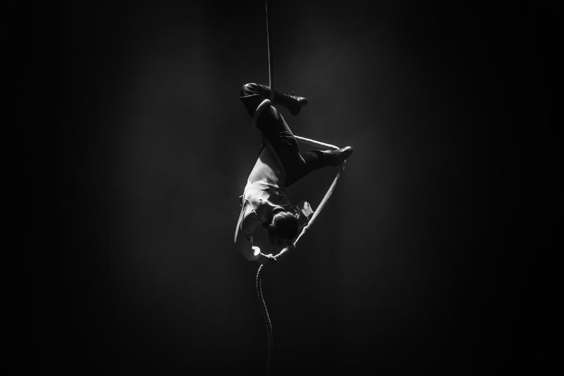
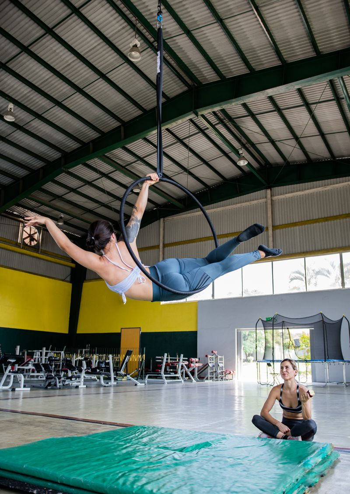
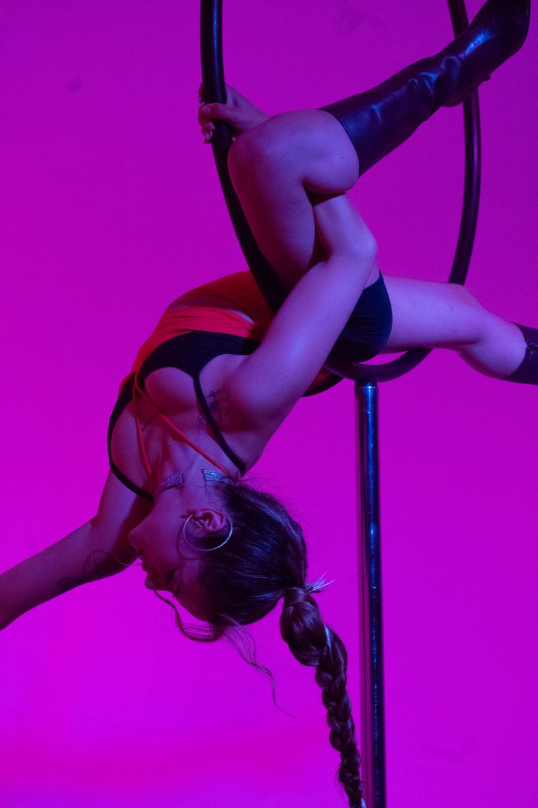
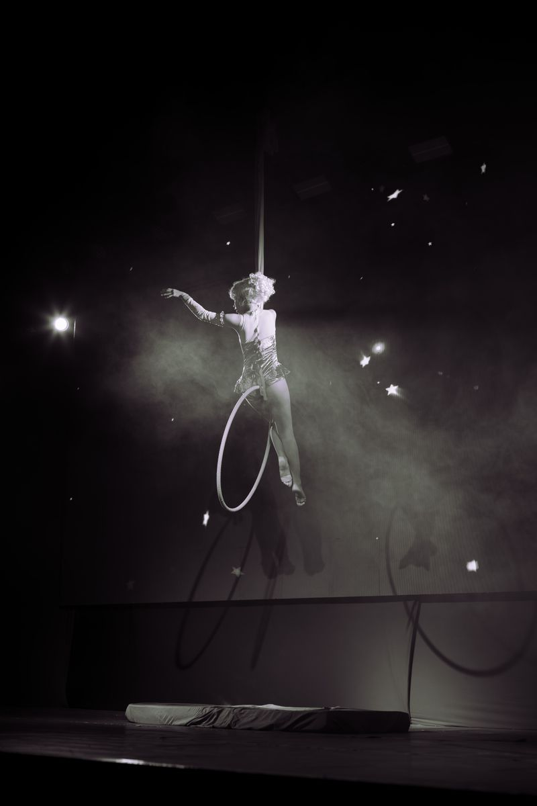

Instructors · Teaching
Guidance for the work in the air.
Aerial skills are learned with someone watching closely — step by step, with room for your own expression.

Teaching philosophy
How aerial arts are learned.
Good teaching in the air is mostly patience.
-
Patience
Strength and confidence arrive gradually, one session at a time.
-
Technique
Grips, wraps and transitions are learned precisely, then repeated.
-
Body awareness
Noticing alignment, effort and fatigue — on the ground and in the air.
-
Creative exploration
Space to find shapes and phrasing that feel like your own.
-
Consistent practice
Regular, focused time on the apparatus matters more than long sessions.
Meet the instructors
A second pair of eyes.
In aerial work, an instructor sees what you can't feel yet. Their role is to:
- Observe
- Watch position, grip and timing from the outside.
- Explain
- Break a movement into steps you can practise.
- Adjust
- Suggest small changes before habits form.
- Encourage
- Choose the right next challenge, at the right time.
Instructor profiles will be shared here soon.

Learning, frame by frame.
Progress in the air is gradual. Each stage takes as long as it takes.
-

Familiarity
Getting comfortable with the apparatus and being off the ground.
-
Coordination
Hands, feet and fabric begin to move together. Sequences replace single moves.
Small, repeated, deliberate.
-

Expression
Finding your own line, rhythm and way of moving.
Let’s talk about your practice.
Tell us what you'd like to learn, and we'll help you find the right starting point.
Contact us